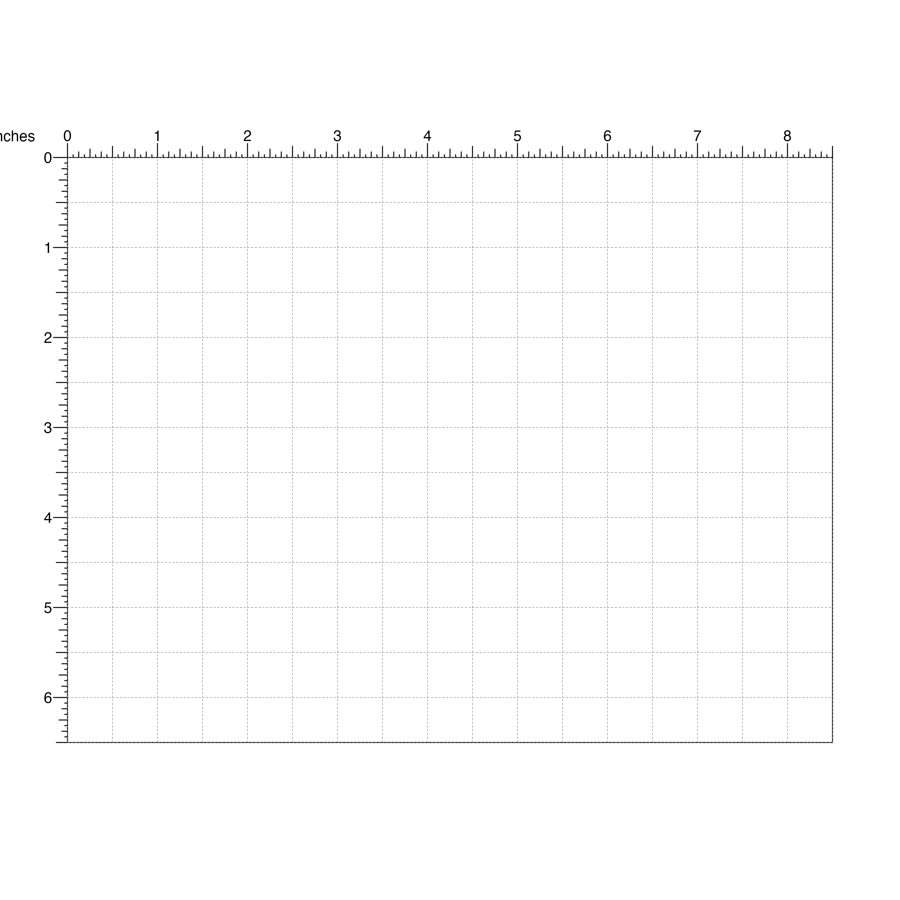
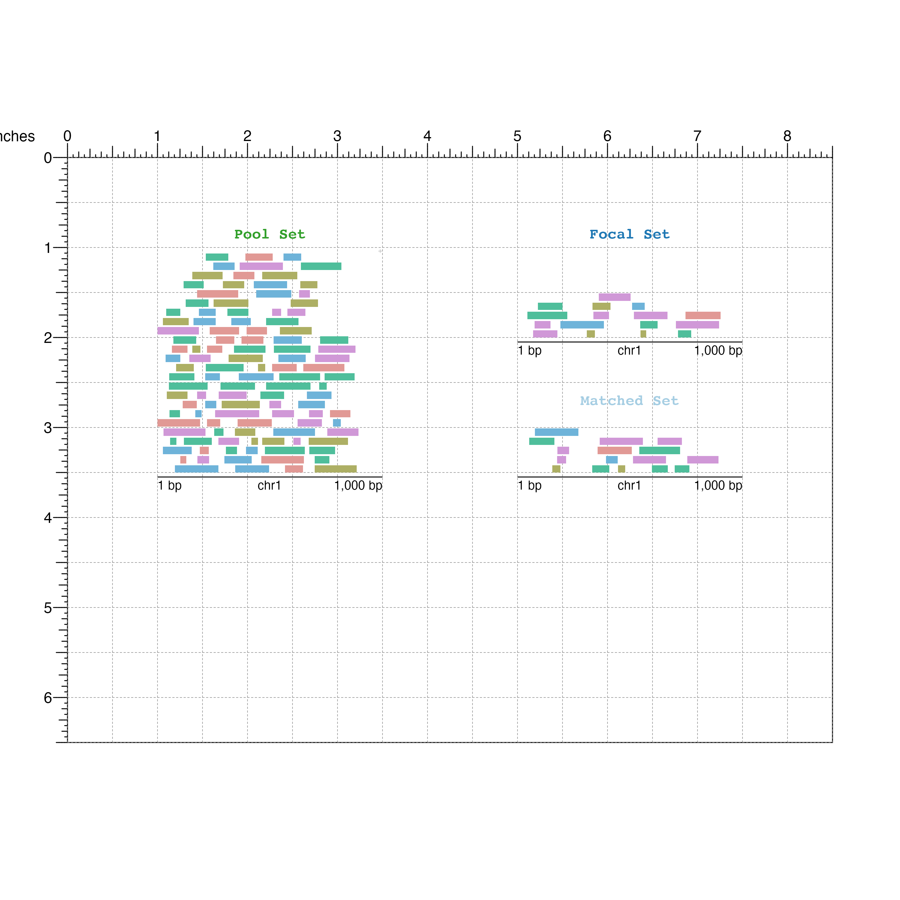

Using nullranges::matchranges() with BentoBox
Eric S. Davis
08/05/2021
Source:vignettes/BioC2021_lightning_talk.Rmd
BioC2021_lightning_talk.RmdThis lightning talk will attempt to use a toy dataset to generate covariate-matched, null-hypothesis GRanges with nullranges::matchRanges() and then visualize the results using the BentoBox framework.
Generating covariate-matched GRanges
For this example lets use a utility function to create a simulated dataset:
set.seed(123)
x <- Bioc2021::makeExampleMatchedDataSet(type = "GRanges")
x## GRanges object with 136 ranges and 3 metadata columns:
## seqnames ranges strand | feature1 color length
## <Rle> <IRanges> <Rle> | <logical> <character> <integer>
## [1] chr1 92-200 * | TRUE #4fbe9b 109
## [2] chr1 71-178 * | TRUE #d098d7 108
## [3] chr1 747-902 * | TRUE #e19995 156
## [4] chr1 362-502 * | TRUE #d098d7 141
## [5] chr1 339-406 * | TRUE #d098d7 68
## ... ... ... ... . ... ... ...
## [132] chr1 511-606 * | FALSE #d098d7 96
## [133] chr1 724-847 * | FALSE #4fbe9b 124
## [134] chr1 72-172 * | FALSE #4fbe9b 101
## [135] chr1 341-480 * | FALSE #4fbe9b 140
## [136] chr1 674-734 * | FALSE #d098d7 61
## -------
## seqinfo: 1 sequence from an unspecified genome; no seqlengthsThis creates a GRanges object with random ranges and 3 metadata colums (feature1, color, and length) that describe “features” of each range.
Let’s demonstrate generating a set of matched ranges by finding ranges that are FALSE for feature1 but have the same distributions of color and length.
Our focal set of interest is where feature1 is TRUE, and pool is all other ranges (where feature1 is FALSE):
focal <- x[x$feature1]
pool <- x[!x$feature1]We can use nullranges::matchRanges() to select a subset from pool that is distributionally matched in color and range length:
library(nullranges)
mgr <- matchRanges(focal = focal,
pool = pool,
covar = ~color + length,
method = 'stratified',
replace = FALSE)
mgr## MatchedGRanges object with 16 ranges and 3 metadata columns:
## seqnames ranges strand | feature1 color length
## <Rle> <IRanges> <Rle> | <logical> <character> <integer>
## [1] chr1 54-164 * | FALSE #4fbe9b 111
## [2] chr1 624-730 * | FALSE #d098d7 107
## [3] chr1 357-508 * | FALSE #e19995 152
## [4] chr1 755-893 * | FALSE #d098d7 139
## [5] chr1 179-230 * | FALSE #d098d7 52
## ... ... ... ... . ... ... ...
## [12] chr1 394-445 * | FALSE #6eb3d9 52
## [13] chr1 599-668 * | FALSE #4fbe9b 70
## [14] chr1 700-763 * | FALSE #4fbe9b 64
## [15] chr1 514-660 * | FALSE #d098d7 147
## [16] chr1 448-478 * | FALSE #adaf64 31
## -------
## seqinfo: 1 sequence from an unspecified genome; no seqlengthsoverview can show how successful our matching was:
overview(mgr)## MatchedGRanges object:
## set N color.#4fbe9b color.#6eb3d9 color.#adaf64 color.#d098d7
## focal 16 4 2 3 6
## matched 16 5 2 2 6
## pool 120 30 24 22 22
## unmatched 104 25 22 20 16
## color.#e19995 length.mean length.sd ps.mean ps.sd
## 1 110 56 0.15 0.059
## 1 100 58 0.15 0.061
## 22 110 49 0.11 0.057
## 21 110 48 0.11 0.055
## --------
## focal - matched:
## color.#4fbe9b color.#6eb3d9 color.#adaf64 color.#d098d7 color.#e19995
## -1 0 1 0 0
## length.mean length.sd ps.mean ps.sd
## 3.4 -2.1 -0.00098 -0.0017Visualizing with BentoBox
Defining the region to plot:
We can visualize these ranges by creating a BentoBox page:
bbPageCreate(width = 8.5, height = 6.5, default.units = 'inches')
Visualize the pool GRanges:
poolSet <- bbPlotRanges(data = pool,
params = region,
x = 1,
y = 1,
width = 2.5,
height = 2.5,
fill = pool$color)
bbAnnoGenomeLabel(plot = poolSet,
x = 1,
y = 3.55)
bbPlotText(label = "Pool Set",
x = 2.25,
y = 0.9,
just = c("center", "bottom"),
fontcolor = "#33A02C",
fontface = "bold",
fontfamily = 'mono')
Visualize the focal GRanges of interest:
focalSet <- bbPlotRanges(data = focal,
params = region,
x = 5,
y = 1,
width = 2.5,
height = 1,
fill = focal$color)
bbAnnoGenomeLabel(plot = focalSet,
x = 5,
y = 2.05)
bbPlotText(label = "Focal Set",
x = 6.25,
y = 0.9,
just = c("center", "bottom"),
fontcolor = "#1F78B4",
fontface = "bold",
fontfamily = 'mono')And finally the matched GRanges:
## Matched set
matchedSet <- bbPlotRanges(data = mgr,
params = region,
x = 5,
y = 2.5,
width = 2.5,
height = 1,
fill = mgr$color)
bbAnnoGenomeLabel(plot = matchedSet,
x = 5,
y = 3.55)
bbPlotText(label = "Matched Set",
x = 6.25,
y = 2.75,
just = c("center", "bottom"),
fontcolor = "#A6CEE3",
fontface = "bold",
fontfamily = 'mono')
Below our GRanges, we can use BentoBox to place ggplots created from the nullranges plotPropensity() and plotCovariate() functions.
First lets plot propensity scores:
library(ggplot2)
smallText <- theme(legend.title = element_text(size=8),
legend.text=element_text(size=8),
title = element_text(size=8),
axis.title.x = element_text(size=8),
axis.title.y = element_text(size=8))
## Plot propensity scores ggplot in BentoBox
propensityPlot <-
plotPropensity(mgr, sets=c('f','m','p')) +
smallText +
theme(legend.key.size = unit(0.5, 'lines'),
title = element_blank())
bbPlotGG(plot = propensityPlot,
x = 1, y = 4.5, width = 2.5, height = 1.5,
just = c("left", "top"))
## Text labels
bbPlotText(label = "plotPropensity()",
x = 1.10, y = 4.24,
just = c("left", "bottom"),
fontface = "bold",
fontfamily = 'mono')
bbPlotText(label = "~color + length",
x = 1.25, y = 4.5,
just = c("left", "bottom"),
fontsize = 10,
fontfamily = "mono")plotting color and length covariates:
## Plot "color" covariate
covColor <-
plotCovariate(x=mgr, covar=covariates(mgr)[1], sets=c('f','m','p')) +
smallText +
theme(legend.text = element_blank(),
legend.position = 'none')
bbPlotGG(plot = covColor,
x = 3.50, y = 4.5, width = 1.8, height = 1.5,
just = c("left", "top"))
## Plot "length" covariate
covLength <-
plotCovariate(x=mgr, covar=covariates(mgr)[2], sets=c('f','m','p'))+
smallText +
theme(legend.key.size = unit(0.5, 'lines'))
bbPlotGG(plot = covLength,
x = 5.30, y = 4.5, width = 2.75, height = 1.5,
just = c("left", "top"))
## Text labels
bbPlotText(label = "plotCovariate()",
x = 3.75,
y = 4.24,
just = c("left", "bottom"),
fontface = "bold",
fontfamily = "mono")
bbPlotText(label = covariates(mgr),
x = c(4, 5.9),
y = 4.5,
just = c("left", "bottom"),
fontsize = 10,
fontfamily = "mono")When the plot is finished you can remove the page guides:
And now your plot is publication-ready!